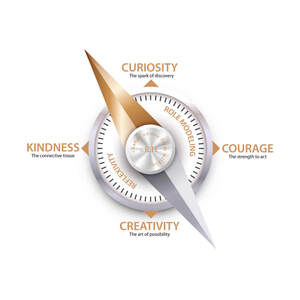

Trade Mark Journal No.2026/011 13 March 2026
UK00004345977 26 February 2026 (41,44)

Over the past three decades I have explored how to drive the cultural changes needed to embed collaboration in everyday healthcare practice. Six relational qualities integral to relational leadership – curiosity, courage, creativity, kindness, role modelling and reflexivity – were identified in my doctoral research on relational leadership (Hawley, 2021). Each relational quality is defined and discussed in the Unlocking a Relational Mindset Model Framework www.rachelhawley.uk/the-model-framework The relational qualities and characteristics are not meant to be exhaustive or prescriptive. Rather they insight on how we can enable collaborative engagement and to move from being a ‘role’ to part of our ‘identity’. The Relational Compass (image submitted) can be imagined as a dynamic organising framework – not a fixed model but a way of orientating ourselves within the complexity of relationships. Each point on the compass - curiosity, courage, creativity, kindness - represents a pivotal point for cultivating collaborative relationships - with our self, with others, and with our leadership, coaching or mentoring context. Curiosity: the spark of discovery. Courage: the strength to act. Creativity: the art of possibility. Kindness: the connective tissue. Within the relational compass reflexivity and role modelling are not additional points – rather, they give the compass movement and direction. These are the processes through which we can align our values with our behaviours as we navigate the complexity of relational work. How these relational qualities work together: Role modelling - the outer expression: it is the visible practice of a relational mindset and values. It our expression of relational qualities in action. Essentially it is how others see and experience relationships through our curiosity, courage, creativity and kindness. Role modelling brings relational coaching and leadership and to life through embodying relational practices. Reflexivity - the inner compass: it deepens our self-awareness, builds greater holistic understanding, and grounds our actions in values. Reflexivity keeps relational practice authentic and evolving. Reflexivity is a feeling of contact and engagement. It resembles [leaders and coaches] understanding their own reflexive practice. Connection, with self and others is closely associated with being fully present, and willingness to value experience at a deep level – it emerges where [coaches] find ways to reflect self-acceptance or belonging. In this way we become explorers of our own journey towards developing relational and ethical maturity. The model is driven by the curiosity in how the cultural and behavioural changes that are needed to embed collaborative ways of working in everyday practice might be achieved. The centrepeice focuses on how we enable engagement to move 'engagement' from being a 'role' to part of our 'identity', values and behaviours. This evidence-based approach is being used by leaders, coaches and mentors in several ways including: - determining to what extent relational qualities are present (individuals / teams) - supporting professional practice activities e.g. professional re-validation, coaching accreditation - a conversational tool (coaching, mentoring). References (examples of the evidence-base): • Hawley, R., 2021. Relational leadership in the NHS: how healthcare leaders identify with public engagement (Doctoral thesis, Sheffield Hallam University). https://shura.shu.ac.uk/30739/1/Hawley_2021_ProfD_RelationalLeadershipNHS.pdf • Hawley, R. (2025). Unlocking a relational mindset: the model framework https://www.rachelhawley.uk/the-model-framework • Hawley, R. (2024). Relational Leadership and Practice; Learning from the NHS | NCCPE (publicengagement.ac.uk) • Hawley R, Wall T. (2024). Leading across healthcare silos: why relational leadership matters? BMJ Leader Published Online First: 13 February 2024. doi: 10.1136/leader-2023-000859 https://bmjleader.bmj.com/content/early/2024/02/13/leader-2023-000859# • Iordanou, I., Iordanou, C. and Hawley, R., 2017. Values and Ethics in Coaching. Sage Publications. • Wall, T., Hawley, R., (2023). Shining the light on relationships. The Municipal Journal. https://www.themj.co.uk/Shining-a-light-on-relationships/233263 A participant reflection – journal extract: “I was struck by how much of it invited me not just to “learn” something new, but to meet myself again — through the eyes of curiosity, courage, creativity, kindness, reflexivity, and role-modelling. As I moved through each section, I found myself pausing often. The guide kept inviting me to sit with my own assumptions, my patterns, and the ways I show up in relationships — with myself, with others, and within my wider organisational context. My first impression was that the Relational Mindset Development Tool isn’t meant to give me a definitive answer. It doesn’t diagnose or judge. Instead, it feels like holding up a mirror — one that shows me who I am right now, while also hinting at who I might become. I appreciated the reminder that relational qualities are not fixed. I could feel that truth in myself: sometimes I am courageous, sometimes less so; sometimes I am beautifully curious, sometimes preoccupied or tired. The tool’s spectrum-based approach felt honest and humane… I can see myself using the tool in several ways: To generate material for my own CPD, revalidation, and professional reviews - To frame reflective conversations in coaching or mentoring contexts. - To understand team dynamics — where we collectively lean into relational practice, and where we hold back. - To revisit my self-representation over time and notice patterns. I like the idea that the tool encourages ongoing inquiry rather than arriving at a “final state.” The companion guide left me with a sense of possibility. It sparked something - perhaps the very qualities it describes curiosity about my habits, courage to challenge them, creativity in how I express myself, kindness toward my imperfections, a renewed desire to role-model relational practice, and a deeper reflexive connection to my values. Above all, it reminded me that relational work is both an art and a science — and that it grows not in isolation, but through shared stories, conversations, and courageous relationships.”
- Class 41
- Coaching; Coaching [training]; Personal coaching [training]; Coaching services; Training or education services in the field of life coaching; Business mentoring services; Providing of training, teaching and tuition; Arranging professional workshop and training courses; Conducting training seminars for clients; Arrangement of training courses in teaching institutes; Training; Organisation of training seminars; Conducting workshops [training]; Education and training; Personal development training; Providing of training; Provision of training courses in personal development; Consultancy services relating to the education and training of management and of personnel; Courses (Training -) relating to management; Consultancy services relating to the training of employees; Organization of seminars; Educational services in the nature of coaching; Education and training consultancy.
- Class 44
- Consultancy services relating to health care.
Rachel Rose Hawley